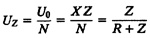
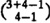

| Previous | Table of Contents | Next |
The equations for system performance metrics given earlier in Section 35.3 are still valid. The queue length distribution formulas apply to devices other than terminals. Queue length distributions for terminals are somewhat difficult to compute and are not covered here. Interested readers may refer to Buzen (1973). The mean queue lengths and device utilizations for the terminals can be computed as follows:
Q0 = XZ
U0 = XZ
This is the combined utilization of N terminals. Utilization of individual terminals is

Example 35.5 Consider a timesharing system similar to the batch system of Example 35.1. The system consists of a central processor, two disks labeled A and B, and three terminals. It can be represented by the queueing network shown in Figure 32.8. An average user makes 13 I/O requests to disk A and 6 I/O requests to disk B. The service times per visit to the CPU, disk A, and disk B are 39, 180, and 260 milliseconds, respectively. The users have an average think time of 4.68 seconds.
For this system the service times are
SCPU = 0.039, SA = 0.18, SB = 0.26
the visit ratios are
VCPU = 13 + 6 + 1 = 20, VA = 13, VB = 6
total service demands are
DCPU = 20 × 0.039 = 0.78,
DA = 13 × 0.18 = 2.34,
DB = 6 × 0.26 = 1.56,
and Z = 4.68.
For the scaling factor, we once again choose α = 1/0.78. This results in y0 = 6, yCPU = 1, yA = 3, and yB = 2. Computation of the normalizing constant is shown in Table 35.4. The tabular arrangement is identical to that of Table 35.3 except that a new column for the terminal has been added. The nth row of this column is yn0/n!. Computation of other columns is done as before.
From the last column of the table we can see that G(0) = 1, G(1) = 12, G(2) = 79, and G(3) = 384. The total number of system states is  or 20. These 20 states and their probabilities, as computed using Equation (35.8), are listed in Table 35.5. From Table 35.5, we can compute any desired statistics on the queue length of any device including terminals. For example, the probability of two jobs at the terminals is 0.094 + 0.141 + 0.047 = 0.282. Similarly, the probability of one job at disk A is 0.031 + 0.016 + 0.008 + 0.094 + 0.047 + 0.141 = 0.336.
| TABLE 35.4 Computing Normalizing Constant for Example 35.5 | ||||
|---|---|---|---|---|
| n | y0 = 6 | yCPU = 1 | yA = 3 | yB = 2 |
| 0 | 1 | 1 | 1 | 1 |
| 1 | 6 | 7 | 10 | 12 |
| 2 | 18 | 25 | 55 | 79 |
| 3 | 36 | 61 | 226 | 384 |
| Previous | Table of Contents | Next |